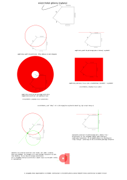

Grafika Komputerowa
Laboratorium I
Kazimierz Wojciechowski
19.10.2017
Klawiszologia
Zdecydowałem się na obsługę wszystkich zdarzeń z poziomu adaptywnego menu kontekstowego. Polecenia grupuję według nazw wielokątów. Następnie według kategorii klikniętego obiektu (czyli wielokąt, wierzchołek albo segment).
Algorytm
Założenia i ograniczenia
Zakładam, że nowe położenie wierzchołka jest możliwe do osiągnięcia. Oznacza to, że model spełni żądanie wytedy i tylko wtedy, gdy nowe położenie idealnie (co do epsilonu np. \( 2^{-10} \) ) spełnia żądanie oraz nie nagromadziło się zbyt dużo błędów numerycznych podczas rozwiązywania wstecz.
Z tego powodu m.in. trudno jest spełnić żądanie dla krawędzi z ograniczeniem w bezpośrednim sąsiedztwie usztywnionego wierzchołka.
Pomysł
Alogrytm odpowiednio uogólnia pewne pole powierzchni reprezentujące wszystkie możliwe punkty do osiągnięcia. Pole jest początkowo pierścieniem o zerowych promieniach i o środku pokrywającym się z położeniem nowego żądanego punktu. Następnie algorytm poglądowo uogólnia pole według reguł:
- Pierścień uogólniony o stałą odległość uogólnia się na pierścień
- Pierścień uogólniony o poziomą/pionową linię uogólnia się na pas
- Pas uogólniony o stałą odległość uogólnia się na pas
- Pas uogólniony o poziomą/pionową linię uogólnia się na pas
Następnie przechodząc kolejno po krawędziach uogólniam pola powierzchni i na bieżąco sprawdzam czy kolejny wierzchołek nie zawiera się przypadkiem w dotychczas wyznaczonym polu. Algorytm kończy uogólnianie dopóki nie znajdzie zawierającego się wierzchołka.
Gdybyśmy napotkali wierzchołek sztywny nienależący do pola lub gdybyśmy potrzebowali zmienić więcej niż ile wynosi liczność wierzchołków, to istniałyby wierzchołki którym przypisujemy dwa różne położenia (jedno wyznaczone idąc zgodnie z ruchem wskazówek zegara, a drugie położenie wyznaczyliśmy idąc przeciwnie do ruchu wskazówek zegara). Takie sytuacje nie mają rozwiązania.
Wyznaczywszy pierwsze wierzchołki należące do pól wystarczy nastrajać wierzchołki wracając to wierzchołka głównego. Nastrajamy wybierając nabliższy (prawidowy) rzut lub najbliższe przecięcie wcześniejszego pola wraz z polem generowanym przez odpowiedni segment (czyli okrąg lub linia)
W przypadku wieloznaczności możemy wybierać albo punk leżący najbliżej poprzedniego położenia albo np. punk dla którego błąd numeryczny będzie miał najmniejszy moduł (niestety powoduje to niekomfortowy efekt niezdecydowania algorytmu).
Teoretycznie taki proces ma oczywiście rozwiązanie, ale kumulujące się błędy numeryczne czasami prowadzą do rozstrajania się pól i nie można już znaleźć rozwiązania.
Aby wymusić na krawędzi relację pozostania poziomej, pionowej lub o konkretnej długości wystarczy, że wyślę żądanie, aby jeden z wierzchołków pozostał na swoim miejscu. W ten sposób algorytm dostosuje odpowiednio drugi koniec krawędzi w taki sposób, aby pierwszy wierzchołek właśnie pozostał na swoim miejscu.
Chciałbym wzbogacić niedoskonały opis algorytmu chociażby przykładem jego działania:
Pomysły na dalszą optymalizację
W interpreterze Javy nie zauważyłem szczególnej różnicy gdy w algorytmie Bresenhama użyję instrukcji warunkowych, czy też uniknę instrukcji warunkowych stosując sztuczki w duchu strony internetowej Stanford Bithacks. Ciekawi mnie czy eliminacja zjawiska branchingu procesora skutkowałaby wrostem czy spadkiem wydajności w przypadku projektu c++.
Aby zminimalizować kumulowanie się błędów numerycznych uważam, że można by spróbować zastosować metodę Halley'a (lub wielowymiarową metodę Newtona) za każdym razem podczas wyznaczania przecięcia np. pierścienia z innym pierścieniem. Na przykład: $$ f_n(x):=(x-a)^2+(y_{n-1}-b)-R^2=0 $$ $$ g_n(y):=(x_{n-1}-a)^2+(y-b)-R^2=0 $$ W ten sposób wyznaczone numerycznie rozwiązanie było by zwyczajnie dobrym punktem początkowym dla metody numerycznej znajdującej prawdziwe rozwiązanie.
Czcionkę wykorzystałem z zasobów Google Fonts